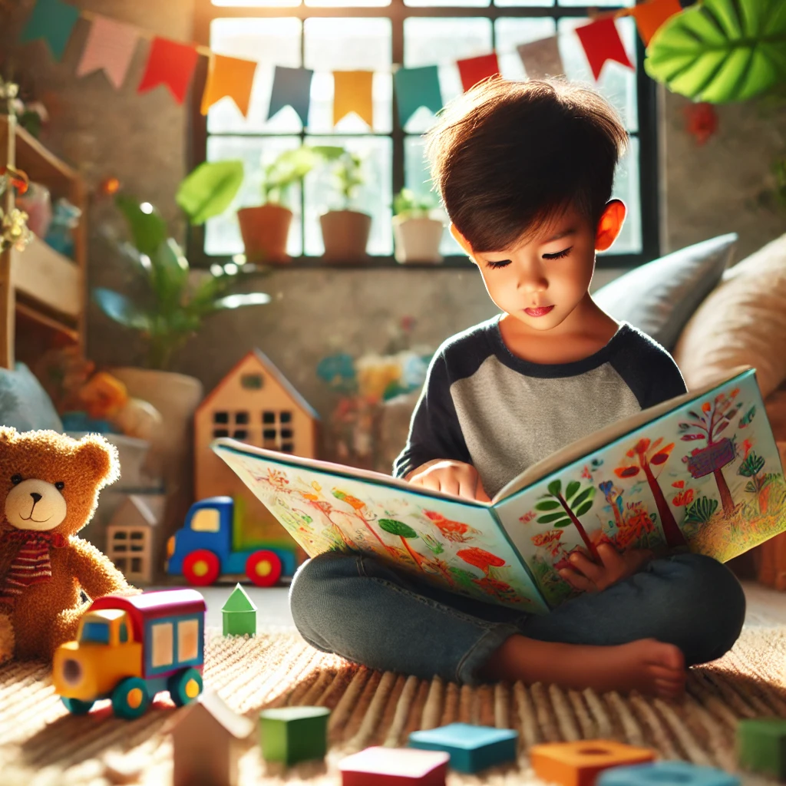
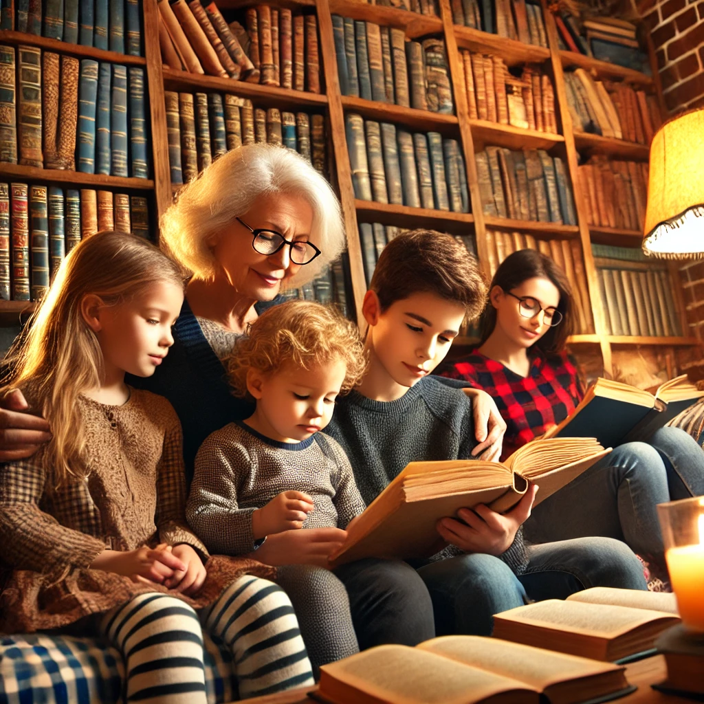
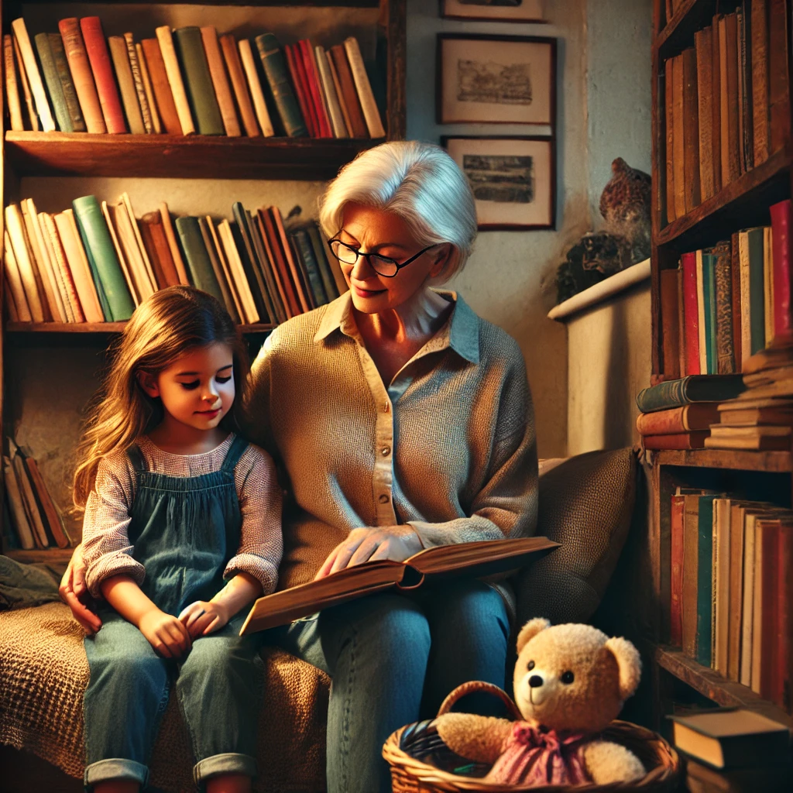

Pathways to Literacy: A Multimodal Exploration of Our Literacy Journeys
Welcome to our collaborative exploration of literacy! This website showcases the unique literacy journeys of our group members: Amine, Logan, Sydney, and Elum. Each of us has been shaped by different experiences, and through these narratives, we aim to reflect on the powerful influence of family, education, and personal challenges in our literacy growth.
The heart of this project revolves around two central themes: Family Influence and Growth & Transformation. We invite you to dive into our stories and join us in celebrating the role of literacy in our lives.
Amine's Literacy Journey
Home literacy practices are extremely important in developing early language and literacy skills (Curry, Reeves, & McIntyre, 2016). Amine's journey into literacy was deeply intertwined with his religious upbringing. Growing up in a household rich with Islamic teachings, Amine found himself drawn to the words of scholars like Ibn Taymiyyah. From a young age, Amine would sit beside his grandfather, who read aloud from classical Islamic texts. Those moments weren’t just about listening to words—they were a bonding experience, full of warmth, curiosity, and a sense of connection to a deeper spiritual tradition.
As Amine grew older, his love for reading turned into a passion for seeking knowledge. He began reading books on Islamic philosophy, law, and history, which not only expanded his understanding of the world but also honed his ability to think critically. His journey wasn’t without challenges—there were moments when the language felt complex and overwhelming, but his drive to understand kept him going. The teachings of scholars inspired him to view literacy as a lifelong pursuit, where every word read is a step toward personal and spiritual growth.

"The essence of knowledge is to know what you do not know & to seek it with sincerity." - Ibn Taymiyyah.
Logan's Literacy Journey
Logan’s early literacy was shaped not only by his family but also by sponsorship—a negotiated power dynamic between the sponsor and the learner, as Brandt describes. Logan's journey began with bedtime stories—those magical tales of mischief and wonder from Dr. Seuss. His mom’s lively voice brought each character to life, and these stories quickly became the highlight of Logan's evenings. Inspired by these imaginative adventures, Logan started creating his own stories, scribbling them down in colorful notebooks with doodles to match. He loved the feeling of bringing his own ideas to life and sharing them with his family, who always cheered him on.
When Logan reached middle school, a local librarian took notice of his love for storytelling. She introduced him to a broader range of literature—fantasy novels, mysteries, and graphic novels. Logan would spend hours at the library, exploring different genres and learning about different writing styles. His passion for creative writing evolved, and in high school, Logan faced the challenge of shifting to more structured academic writing. While it was difficult at first to leave behind the playful freedom of his early stories, Logan eventually found a way to balance creativity with structure, making his essays unique and engaging.
Sydney's Literacy Journey
Sydney's love for reading was a family tradition. Her grandmother, an avid reader, always had a book in her hands and loved sharing stories from her own childhood. Sydney’s mother, a teacher, would fill their home with books—picture books, classics, fairy tales—anything that could spark a child's imagination. Reading was never a chore; it was an adventure shared between generations. Sydney would spend lazy Sunday afternoons with her grandmother, listening to stories while the scent of freshly baked cookies filled the air.
 "Home literacy practices are extremely important in developing early language and literacy skills" (Curry, Reeves, & McIntyre, 2016).
However, high school brought new challenges. A discouraging teacher made her feel that her love for literature wasn’t valuable, and Sydney almost stopped reading entirely. It was her mother who gently nudged her back towards her passion—introducing her to books that resonated with her teenage struggles and helped her see herself reflected in the characters. Slowly, Sydney regained her love for reading, finding solace and strength in the pages of novels that spoke to her journey of self-discovery.
Elum's Literacy Journey
Elum’s literacy journey was anything but conventional. Growing up, Elum faced challenges with focus due to ADD/ADHD, which made reading a daunting task. The words on the page often seemed to dance around, and staying focused felt like an impossible task. But Elum's family was determined to support him. His mom would break down reading sessions into smaller, more manageable pieces, and they would celebrate every little achievement—whether it was finishing a chapter or understanding a difficult word.
Brandt highlights how "sponsorship is a relationship, a negotiated power dynamic between the sponsor and the learner." This notion perfectly captures Elum’s literacy journey, as his parents played the role of supportive sponsors in his pursuit of literacy.
Elum also developed his own strategies—he used colorful sticky notes, highlighters, and even voice recordings to help himself grasp and retain information. Over time, he discovered that he had a unique strength: an ability to focus intensely on key details when given the right tools. By high school, Elum had turned his struggles into strengths, using his focus techniques to succeed not only in reading but in other subjects as well. He realized that literacy isn’t about fitting into a traditional mold; it’s about finding what works for you and embracing your personal journey.
Conclusion
Our collective literacy narratives illustrate how personal, familial, and educational influences shape literacy development. Each of us has experienced growth and transformation in our own unique ways—Amine with his devotion to religious texts, Logan through his imaginative stories and creative growth, Sydney in her rediscovery of literature's magic, and Elum in overcoming his challenges to turn literacy into his own personal victory. These journeys highlight the importance of adaptability, resilience, and the power of support from those around us.
Literacy is more than just reading and writing; it's about making connections, seeking knowledge, and growing as individuals. We hope our stories inspire you to reflect on your own literacy journey and the incredible people and experiences that have helped shape it.